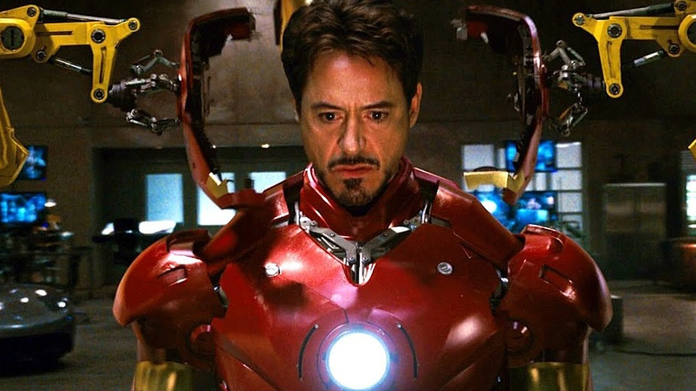
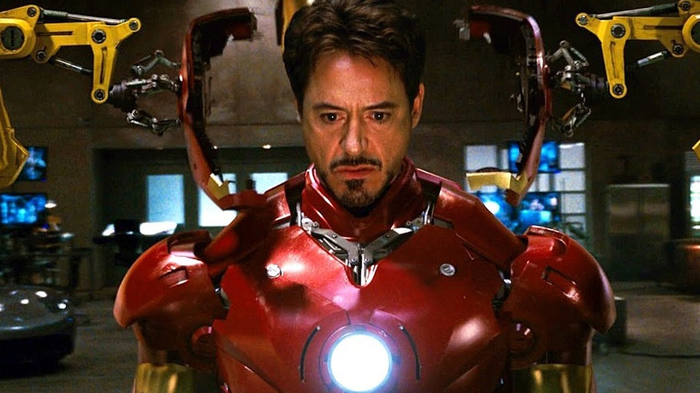
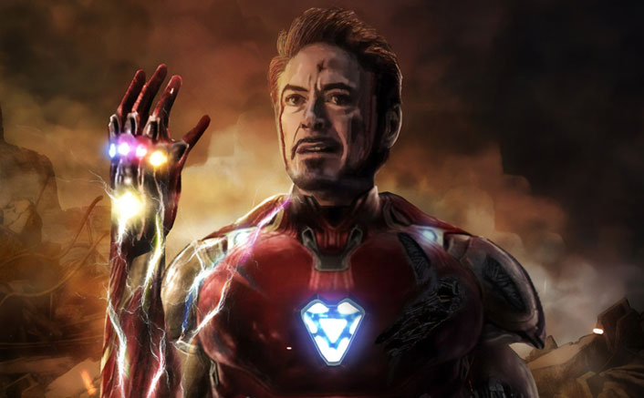
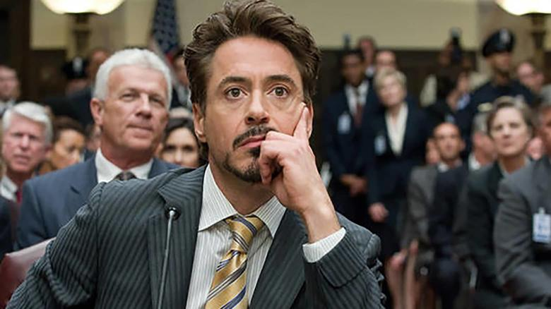
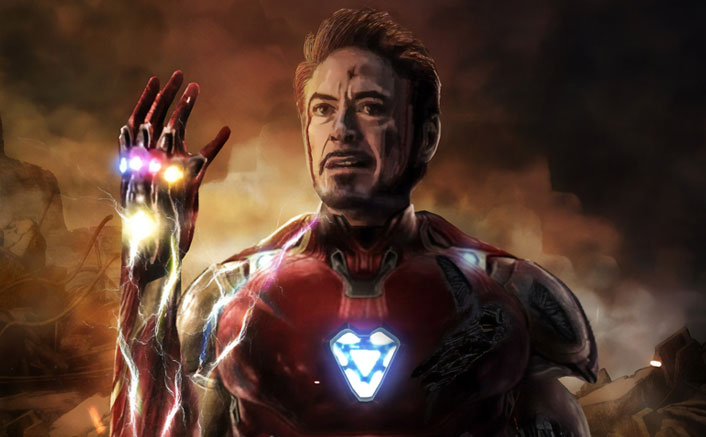
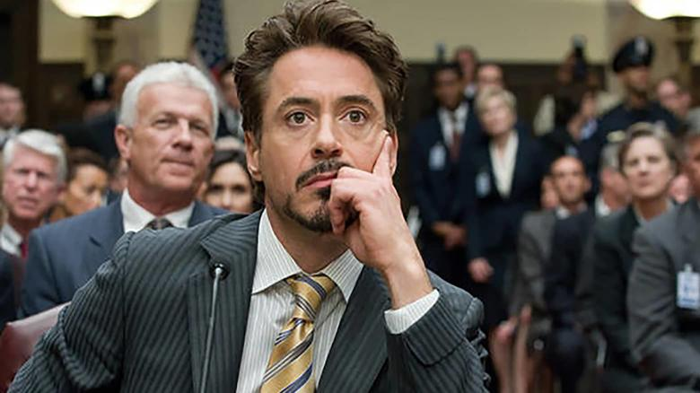

Tony Stark

...Contrary to popular opinion, I know exactly what I'm doing
Tony Stark was a billionaire genius but a mortal man. He applied his skills designing weapons for the government.
He went to the Middle East to demonstrate his goods but was captured by some terrorist goons.
The terrorists made Tony Stark a slave building missiles out of parts they had saved.
Instead Tony made a metal suit with a flamethrower and rockets in his boots.
He took on the terrorists in a fight and escaped his captors in broad daylight.
Crashing in the desert he then was found with peices of his armor scattered on the ground.
Tony brought the suit back home to build a new kind of superhero.
He designed a suit with a power plant built into Tony's chest and a voice activated program named J.A.R.V.I.S with an English accent.
But his Vice-President tried to steal the plans and built a bigger suit to put Tony to an end.
Tony won that fight and proclaimed, "I AM THE IRONMAN". That's how this superhero's story began.
TONY STARK'S ❤ 

 


